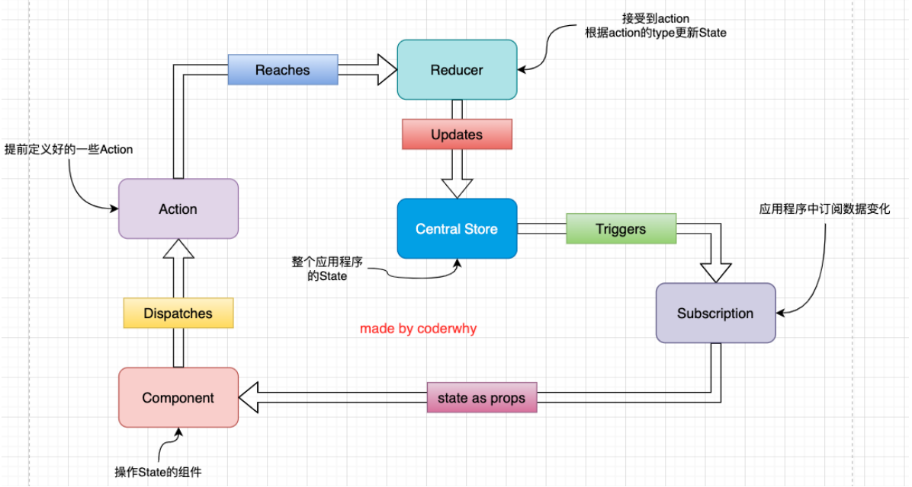
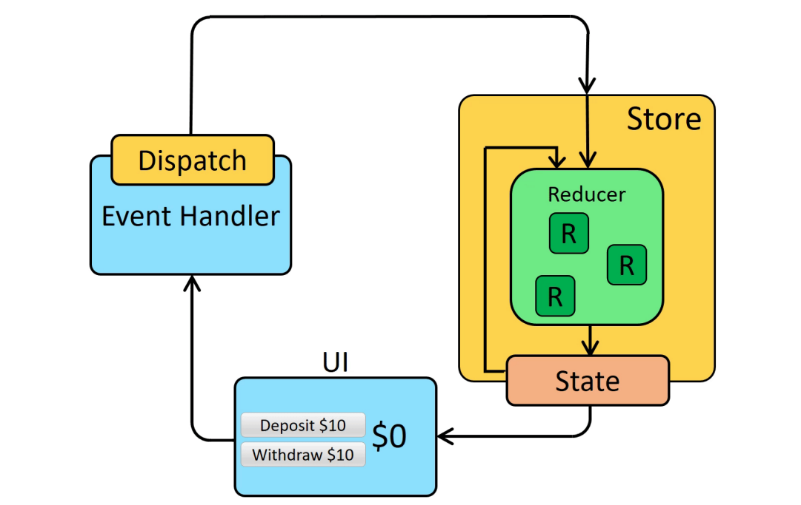
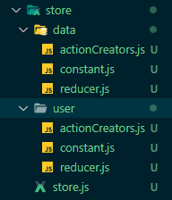

纯函数
在程序设计中，若一个函数符合以下条件，那么这个函数被称为纯函数：
- 此函数在相同的输入值时，需产生相同的输出。
- 函数的输出和输入值以外的其他隐藏信息或状态无关，也和由I/O设备产生的外部输出无关。
- 函数不能有语义上可观察的函数副作用，诸如“触发事件”，使输出设备输出，或更改输出值以外物件的内容等。
::: tip
在计算机科学中，副作用表示在执行一个函数时，除了返回函数值之外，还对调用函数产生了附加的影响， 比如修改了全局变量，修改参数或者改变外部的存储；
例如：
slice截取数组时不会对原数组进行任何操作，而是生成一个新的数组；splice：splice截取数组，会返回一个新的数组，也会对原数组进行修改；
那么，slice就是一个纯函数，而splice函数不是一个纯函数。
:::
React中就要求我们无论是函数还是class声明一个组件，这个组件都必须像纯函数一样，保护它们的props不被修改。
Redux基本使用
原则
-
单一数据源
整个应用程序的state被存储在一棵object tree中，并且这个object tree只存储在一个 store 中：
Redux并没有强制让我们不能创建多个Store，但是那样做并不利于数据的维护； 单一的数据源可以让整个应用程序的state变得方便维护、追踪、修改；
-
State是只读的
唯一修改State的方法一定是触发action，不要试图在其他地方通过任何的方式来修改State；这样就确保了View或网络请求都不能直接修改state，它们只能通过action来描述自己想要如何修改state；、
这样可以保证所有的修改都被集中化处理，并且按照严格的顺序来执行，所以不需要担心race condition（竟态）的问题；
-
使用纯函数来执行修改
通过reducer将旧state和actions联系在一起，并且返回一个新的State：
随着应用程序的复杂度增加，我们可以将reducer拆分成多个小的reducers，分别操作不同state tree的一部分；
所有的reducer都应该是纯函数，不能产生任何的副作用；
定义一个store
创建Store来存储state；
创建store时必须创建reducer；
const { createStore } = require("redux");
const initialState = {
name: "Hi",
};
function reducer() {
return initialState;
}
const store = createStore(reducer);
module.exports = store;获取state
可以通过 store.getState 来获取当前的state；
store.getState()修改store中的数据
通过action来修改state；
通过dispatch来派发action；
const { createStore } = require("redux");
const initialState = {
name: "Hi",
};
function reducer(state = initialState, action) {
if (action.type === "change_name") {
return { ...state, name: action.name };
}
}
const store = createStore(reducer);
module.exports = store;const store = require("./store")
const nameAction = { type: "change_name", name: "HHH" };
store.dispatch(nameAction);reducer是一个纯函数，不要直接修改state；
订阅store中的数据
// 订阅
const unSubscribe = store.subscribe(()=>{
console.log("订阅",store.getState());
})
// 取消订阅
unSubscribe();动态生产action
store.dispatch({ type: "change_name", name: "HHH" });
store.dispatch({ type: "change_name", name: "AAA" });
store.dispatch({ type: "change_name", name: "CCC" });如果需要多次修改store的数据，那么定义action的操作会很繁琐，而且很可能会出错。
我们可以使用函数进行替换
const changeNameAction = (name) => ({
type: "change_name",
name,
});
store.dispatch(changeNameAction("HHH"));
store.dispatch(changeNameAction("AAA"));
store.dispatch(changeNameAction("CCC"));当action生成函数过多的时候，可以将函数放在 actionCreators.js 文件中。
Redux结构划分
如果我们将所有的逻辑代码写到一起，那么当redux变得复杂时代码就难以维护。
可以将代码拆分为：
- store/index.js
- store/reducer.js
- store/actionCreators.js
- store/constants.js
Redux使用流程


在React中使用Redux
import { PureComponent } from "react";
const store = require("./store");
export default class APP extends PureComponent {
constructor() {
super();
this.state = {
counter: store.getState().counter,
};
}
componentDidMount() {
store.subscribe(() => {
this.setState({ counter: store.getState().counter });
});
}
add() {
store.dispatch({ type: "revise", num: this.state.counter + 1 });
}
render() {
return (
<div>
<h1>{this.state.counter}</h1>
<button onClick={(e) => this.add()}>+</button>
</div>
);
}
}react-redux
redux和react没有直接的关系，你完全可以在React, Angular, Ember, jQuery, or vanilla JavaScript中使用Redux。
在react中，每个页面使用redux都需要写一堆重复代码，我们可以通过将重复代码抽取成高阶的形式来简化开发。
通常是使用react-redux插件。
npm install react-reduximport { Provider } from "react-redux";
import store from "./store";
const root = ReactDOM.createRoot(document.getElementById("root"));
root.render(
<Provider store={store}>
<App />
</Provider>
);import { Connect } from "react-redux";
export class APP extends PureComponent {
render() {
return (
<div>
{this.props.counter}
<button onClick={() => this.props.add()}>+1</button>
</div>
);
}
}
// 将state的数据映射到props里面
const mapStateToProps = (state) => ({
counter: state.counter,
});
const mapDispatchToProps = (dispatch) => ({
add(num) {
dispatch({ type: "add", num: 1 });
},
});
export default Connect(mapStateToProps, mapDispatchToProps)(APP);redux-thunk
在之前的代码中，redux中保存的counter是一个本地定义的数据，我们可以直接通过同步的操作来dispatch action，state就会被立即更新。 但在真实开发中，redux中保存的很多数据可能来自服务器，我们需要进行异步的请求，再将数据保存到redux中。
网络请求到的数据也属于我们状态管理的一部分，更好的一种方式应该是将其也交给redux来管理；
redux中使用中间件进行异步的操作，通常使用redux-thunk插件。
默认情况下的dispatch(action)，action是一个对象；而redux-thunk可以让dispatch的action是一个函数；该函数会被调用，并且会传给这个函数一个dispatch函数和getState函数；dispatch函数用于我们之后再次派发action； getState函数考虑到我们之后的一些操作需要依赖原来的状态，用于让我们可以获取之前的一些状态；
-
安装
npm i redux-thunk -
在创建store时传入应用了middleware的enhance函数
import { createStore, applyMiddleware } from "redux"; import thunk from 'react-thunk' const store = createStore(reducer,applyMiddleware(thunk)); -
定义返回一个函数的action
export const fetchMetadataAction = () => { return function (dispatch, getState) { axios.get("......").then((res) => { dispatch({ type: "......", num: res.data }); }); }; };该函数在dispatch之后会被执行；
-
使用
export class APP extends PureComponent { componentDidMount() { this.props.fetchMetadata(); } } const mapDispatchToProps = (dispatch) => ({ fetchMetadata() { dispatch(fetchMetadataAction()); }, });
redux-devtools
浏览器安装完redux-devtools插件后，默认情况下，我们是无法查看redux里面的数据的。
如果需要查看，我们需要在代码中添加相应代码
如何添加相关代码：
https://github.com/reduxjs/redux-devtools/tree/main/extension#installation
import { createStore, applyMiddleware, compose } from "redux";
import thunk from "redux-thunk";
const composeEnhancers = window.__REDUX_DEVTOOLS_EXTENSION_COMPOSE__ || compose;
const store = createStore(reducer, composeEnhancers(applyMiddleware(thunk)));Redux模块

redux给我们提供了一个combineReducers函数可以方便的让我们对多个reducer进行合并。
import { createStore, combineReducers } from "redux";
import userReducer from "./user/reducer";
import dataReducer from "./data/reducer";
const reducer = combineReducers({
user: userReducer,
data: dataReducer,
});
const store = createStore(reducer);
export default store;combineReducers原理：
function reducer(state, action) {
return {
user: userReducer(state.user,action),
data: dataReducer(state.data,action),
};
}Redux Toolkit
在前面我们学习Redux的时候应该已经发现，redux的编写逻辑过于的繁琐和麻烦。 并且代码通常分拆在多个文件中（虽然也可以放到一个文件管理，但是代码量过多，不利于管理）；
Redux Toolkit包旨在成为编写Redux逻辑的标准方式，从而解决上面提到的问题；
::: tip
Redux Toolkit 只是对redux的代码进行了封装
:::
npm install @reduxjs/toolkit核心API：
-
configureStore包装createStore以提供简化的配置选项和良好的默认值。
它可以自动组合你的 slice reducer，添加你提供的任何 Redux 中间件，redux-thunk默认包含，并启用 Redux DevTools Extension。
-
createSlice：接受reducer函数的对象、切片名称和初始状态值，并自动生成切片reducer，并带有相应的actions。
-
createAsyncThunk：接受一个动作类型字符串和一个返回承诺的函数，并生成一个pending / fulfilled / rejected 基于该承诺分派动作类型的 thunk
重构reducer
先对counter的reducer进行重构：
-
通过createSlice创建一个slice。
参数：
- name：用户标记slice的名词，在之后的redux-devtool中会显示对应的名词；
- initialState：第一次初始化时的值；
- reducers：对象类型，可以添加函数；添加的函数类似于redux原来reducer中的一个case语句；函数的参数：state，action；
-
导出
import { createSlice } from "@reduxjs/toolkit";
const counterSlice = createSlice({
name: "counter",
initialState: {
count: 0,
},
reducers: {
add(state, action) {},
},
});
export default counterSlice.reducer;重构store
configureStore用于创建store对象。
参数：
- reducer，将slice中的reducer可以组成一个对象传入此处；
- middleware：可以使用参数，传入其他的中间件；
- devTools：是否配置devTools工具，默认为true；
import { configureStore } from "@reduxjs/toolkit";
import counterReducer from "./features/counter";
const store = configureStore({
reducer: {
counter: counterReducer,
},
});
export default store将RTK的store和react联系起来
导出counter的action，导出的名字与reducers对象里面的函数名一样。
import { createSlice } from "@reduxjs/toolkit";
const counterSlice = createSlice({
name: "counter",
initialState: {
count: 0,
},
reducers: {
add(state, { payload }) {
state.count += payload;
},
},
});
export const { add } = counterSlice.actions;
export default counterSlice.reducer;react代码只需导入adction即可，剩下的代码和以前一样
import { add } from "./store/features/counter.js";
export class APP extends PureComponent {
render() {
return (
<div>
<h1> {this.props.count}</h1>
<button onClick={() => {this.props.addNum();}}>+</button>
</div>
);
}
}
const mapDispatchToProps = (dispatch) => ({
addNum() {
dispatch(add(1));
},
});
export default connect(mapStateToProps, mapDispatchToProps)(APP);
RTK的异步操作
在之前的开发中，我们通过redux-thunk中间件让dispatch中可以进行异步操作。Redux Toolkit默认已经给我们继承了Thunk相关的功能。
import { createAsyncThunk } from "@reduxjs/toolkit";
export const fetchDataAction = createAsyncThunk("Data", async () => {
const res = await axios.get();
return res.data;
});
const counterSlice = createSlice({
// 第一种写法
extraReducers: {
[fetchDataAction.pending](state, action) {},
[fetchDataAction.fulfilled](state, action) {},
[fetchDataAction.rejected](state, action) {},
},
// 第二种写法
extraReducers: (builder) => {
builder
.addCase(fetchDataAction.pending, (state, action) => {})
.addCase(fetchDataAction.fulfilled, (state, action) => {})
.addCase(fetchDataAction.rejected, (state, action) => {});
},
});import { fetchDataAction } from "./store/features/counter.js";
export class APP extends PureComponent {
componentDidMount() {
this.props.fetchData();
}
}
const mapDispatchToProps = (dispatch) => ({
fetchData() {
dispatch(fetchDataAction());
},
});当请求获取到数据后需要保存，上面代码是通过extraReducers来保存，我们也可以直接在fetchDataAction保存数据。
export const fetchDataAction = createAsyncThunk("Data", async (extraInfo, { dispatch, getState }) => {
const res = await axios.get();
dispatch({type:"...",data:res.data})
});实现react-redux的connect
定义一个上下文，用来传递store
import { createContext } from "react";
export const StoreContext = createContext();实现逻辑
import { PureComponent } from "react";
import { StoreContext } from "./b";
export default function connect(mapStateToProps, mapDispatchToProps) {
return function (WrapperComponent) {
class NewComponent extends PureComponent {
constructor(props, context) {
super(props);
this.state = mapStateToProps(context.getState());
}
componentDidMount() {
this.unSubscribe = this.context.subscribe(() => {
this.setState(mapStateToProps(this.context.getState()));
});
}
componentWillUnmount() {
this.unSubscribe();
}
render() {
const state = mapStateToProps(this.context.getState());
const dispatch = mapDispatchToProps(this.context.dispatch);
return <WrapperComponent {...this.props} {...state} {...dispatch} />;
}
}
NewComponent.contextType = StoreContext;
return NewComponent;
};
}
使用
import store from "./store";
import { StoreContext } from "./b";
const root = ReactDOM.createRoot(document.getElementById("root"));
root.render(
<StoreContext.Provider value={store}>
<App />
</StoreContext.Provider>
);
打印dispatch日志
比如我们现在有一个需求：在dispatch之前，打印一下本次的action对象，dispatch完成之后可以打印一下最新的store state；
如果没有中间件，我们可以在派发的前后进行相关的打印。
const mapDispatchToProps = (dispatch) => ({
addNum() {
console.log(action);
dispatch(action);
console.log(state);
},
});很明显，由于每一次的dispatch操作都需要在前面加上上面的逻辑代码，会导致存在大量重复的代码；
事实上，我们可以利用一个hack一点的技术：Monkey Patching，利用它可以修改原有的程序逻辑；对代码进行如下的修改：
function log(store) {
const next = store.dispatch;
function logAndDispatch(action) {
console.log("当前派发的action", action);
next(action);
console.log("派发之后的结果", store.getState());
}
store.dispatch = logAndDispatch;
}
log(store)在调用dispatch的过程中，真正调用的函数其实是dispatchAndLog；
实现redux-thunk
redux中利用一个中间件redux-thunk可以让我们的dispatch不再只是处理对象，还可以处理函数
function thunk() {
const next = store.dispatch;
function dispatchThunk(action) {
if (typeof action === "function") {
action(store.dispatch,store.getState)
}else if(typeof action === "object"){
next(action)
}
}
store.dispatch = dispatchThunk;
}
thunk(store)实现applyMiddleware
import log from "./middleware/log";
import thunk from "./middleware/thunk";
const store = createStore(...);
log(store);
thunk(store);显然，当中间件多起来后，单个调用某个函数来合并中间件并不是特别的方便，所以我们可以封装一个函数来实现所有的中间件合并。
export default function applyMiddleware(store, ...fns) {
fns.forEach((fn) => {
fn(store);
});
}import applyMiddleware from "./middleware/applyMiddleware";
import log from "./middleware/log";
import thunk from "./middleware/thunk";
const store = createStore(...);
applyMiddleware(store, log, thunk);